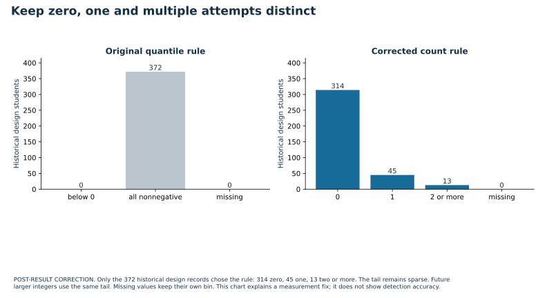
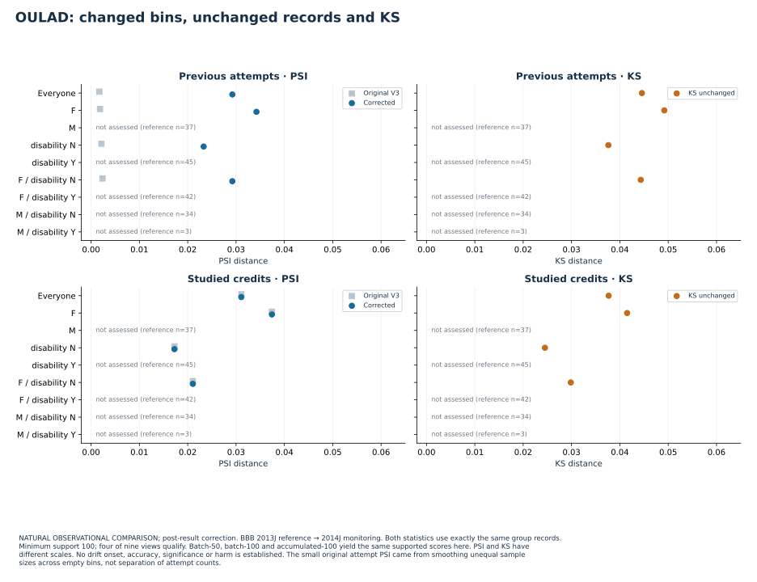
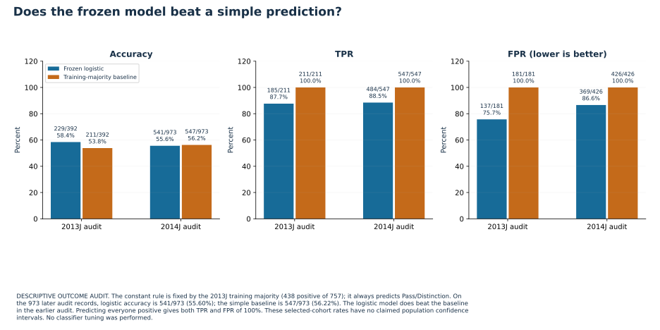
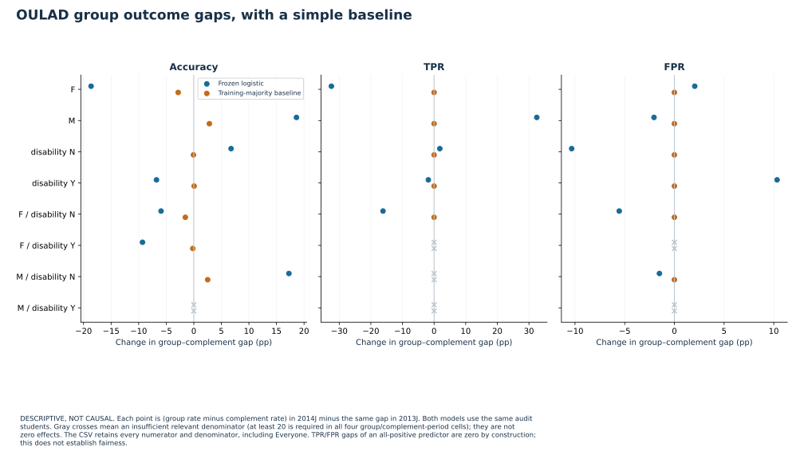
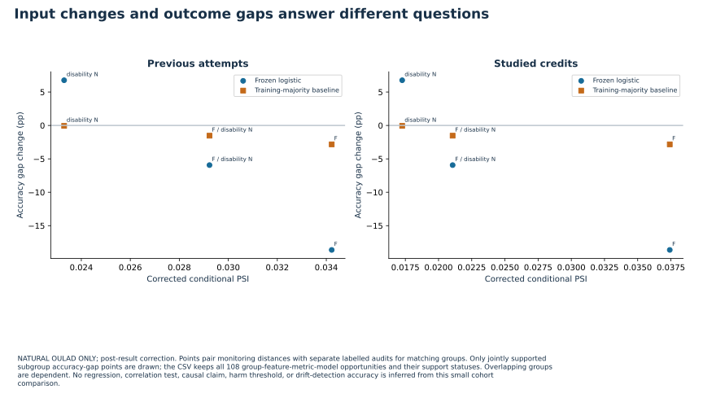
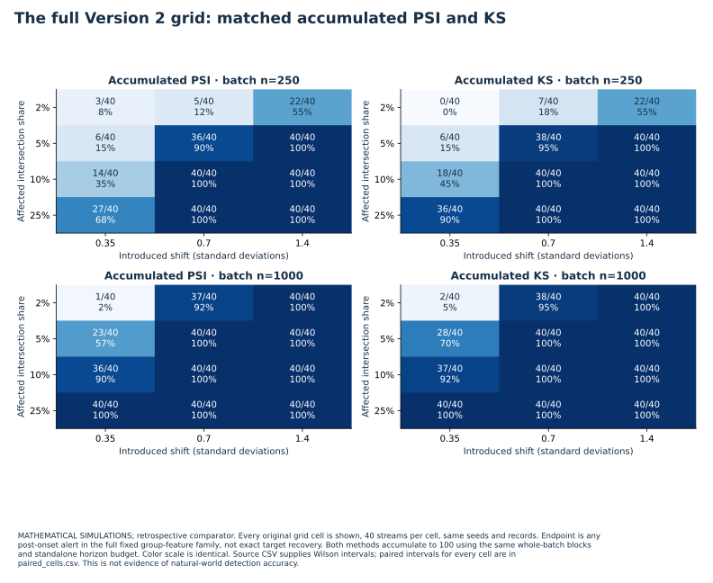
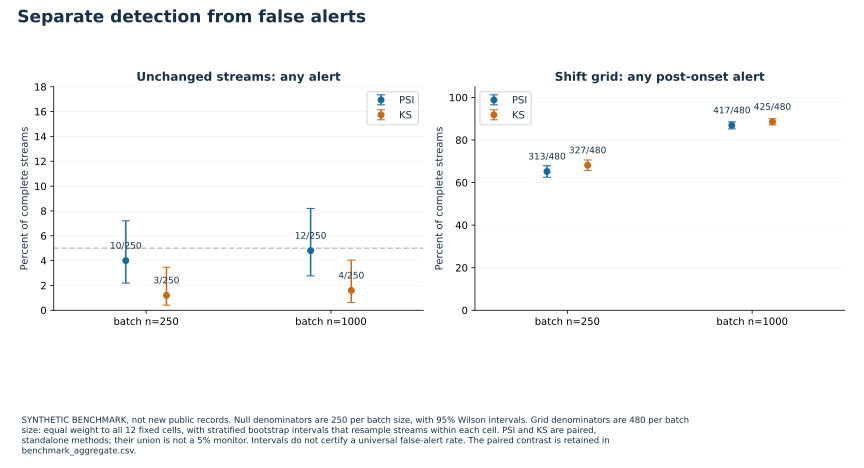
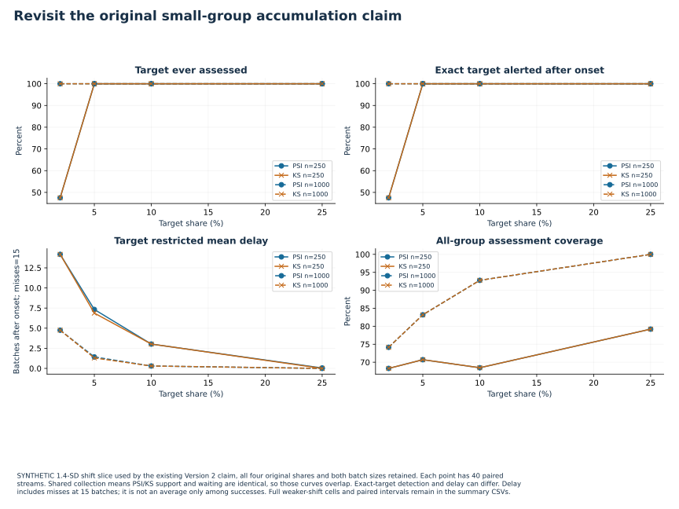
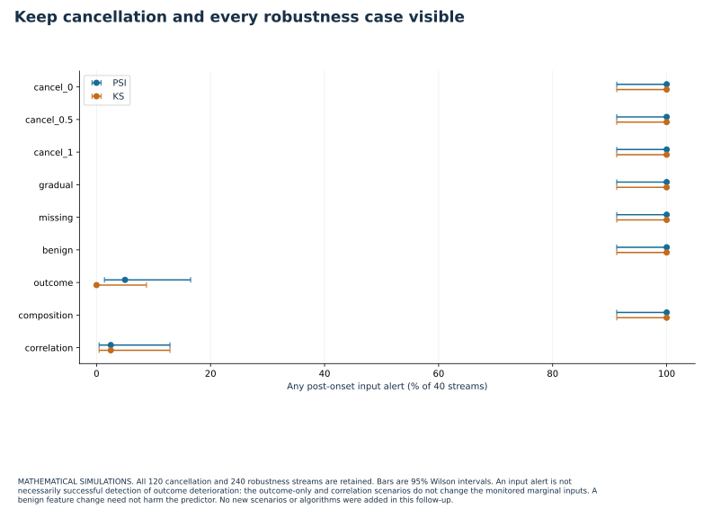
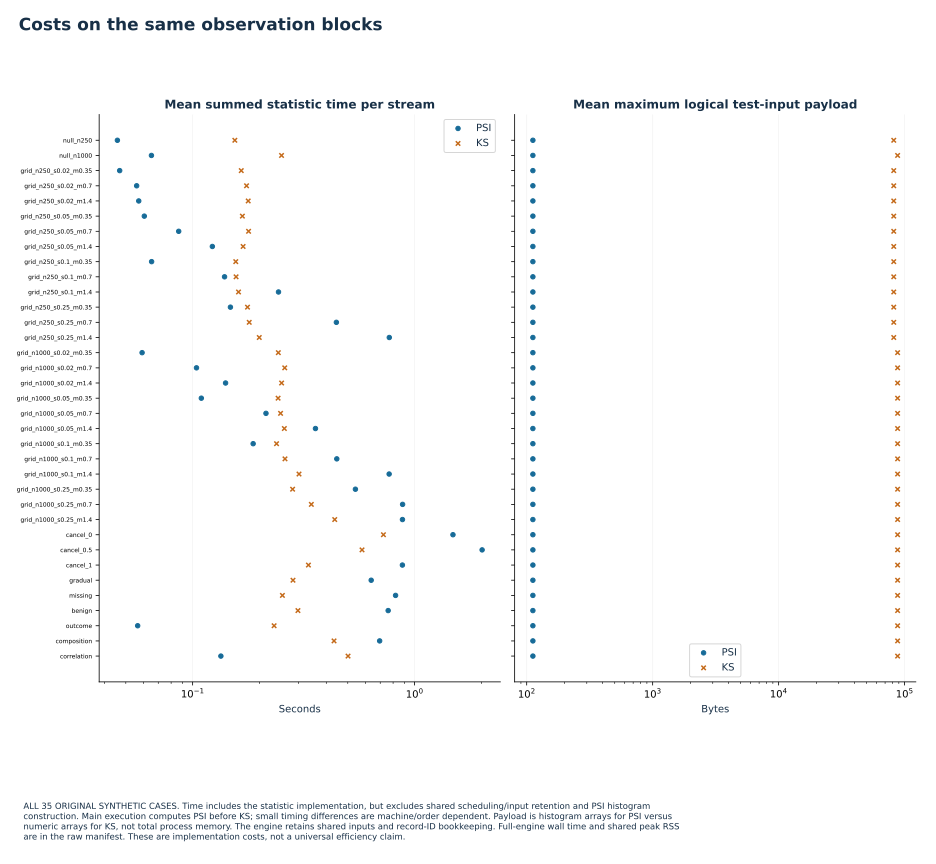

Original versions preserved. Natural observations and mathematical simulations are separate. Final project version remains undecided.

POST-RESULT CORRECTION. Only the 372 historical design records chose the rule: 314 zero, 45 one, 13 two or more. The tail remains sparse. Future larger integers use the same tail. Missing values keep their own bin. This chart explains a measurement fix; it does not show detection accuracy.
Source CSV · Vector PDF
NATURAL OBSERVATIONAL COMPARISON; post-result correction. BBB 2013J reference → 2014J monitoring. Both statistics use exactly the same group records. Minimum support 100; four of nine views qualify. Batch-50, batch-100 and accumulated-100 yield the same supported scores here. PSI and KS have different scales. No drift onset, accuracy, significance or harm is established. The small original attempt PSI came from smoothing unequal sample sizes across empty bins, not separation of attempt counts.
Source CSV · Vector PDF
DESCRIPTIVE OUTCOME AUDIT. The constant rule is fixed by the 2013J training majority (438 positive of 757); it always predicts Pass/Distinction. On the 973 later audit records, logistic accuracy is 541/973 (55.60%); the simple baseline is 547/973 (56.22%). The logistic model does beat the baseline in the earlier audit. Predicting everyone positive gives both TPR and FPR of 100%. These selected-cohort rates have no claimed population confidence intervals. No classifier tuning was performed.
Source CSV · Vector PDF
DESCRIPTIVE, NOT CAUSAL. Each point is (group rate minus complement rate) in 2014J minus the same gap in 2013J. Both models use the same audit students. Gray crosses mean an insufficient relevant denominator (at least 20 is required in all four group/complement-period cells); they are not zero effects. The CSV retains every numerator and denominator, including Everyone. TPR/FPR gaps of an all-positive predictor are zero by construction; this does not establish fairness.
Source CSV · Vector PDF
NATURAL OULAD ONLY; post-result correction. Points pair monitoring distances with separate labelled audits for matching groups. Only jointly supported subgroup accuracy-gap points are drawn; the CSV keeps all 108 group-feature-metric-model opportunities and their support statuses. Overlapping groups are dependent. No regression, correlation test, causal claim, harm threshold, or drift-detection accuracy is inferred from this small cohort comparison.
Source CSV · Vector PDF
MATHEMATICAL SIMULATIONS; retrospective comparator. Every original grid cell is shown, 40 streams per cell, same seeds and records. Endpoint is any post-onset alert in the full fixed group-feature family, not exact target recovery. Both methods accumulate to 100 using the same whole-batch blocks and standalone horizon budget. Color scale is identical. Source CSV supplies Wilson intervals; paired intervals for every cell are in paired_cells.csv. This is not evidence of natural-world detection accuracy.
Source CSV · Vector PDF
SYNTHETIC BENCHMARK, not new public records. Null denominators are 250 per batch size, with 95% Wilson intervals. Grid denominators are 480 per batch size: equal weight to all 12 fixed cells, with stratified bootstrap intervals that resample streams within each cell. PSI and KS are paired, standalone methods; their union is not a 5% monitor. Intervals do not certify a universal false-alert rate. The paired contrast is retained in benchmark_aggregate.csv.
Source CSV · Vector PDF
SYNTHETIC 1.4-SD shift slice used by the existing Version 2 claim, all four original shares and both batch sizes retained. Each point has 40 paired streams. Shared collection means PSI/KS support and waiting are identical, so those curves overlap. Exact-target detection and delay can differ. Delay includes misses at 15 batches; it is not an average only among successes. Full weaker-shift cells and paired intervals remain in the summary CSVs.
Source CSV · Vector PDF
MATHEMATICAL SIMULATIONS. All 120 cancellation and 240 robustness streams are retained. Bars are 95% Wilson intervals. An input alert is not necessarily successful detection of outcome deterioration: the outcome-only and correlation scenarios do not change the monitored marginal inputs. A benign feature change need not harm the predictor. No new scenarios or algorithms were added in this follow-up.
Source CSV · Vector PDF
ALL 35 ORIGINAL SYNTHETIC CASES. Time includes the statistic implementation, but excludes shared scheduling/input retention and PSI histogram construction. Main execution computes PSI before KS; small timing differences are machine/order dependent. Payload is histogram arrays for PSI versus numeric arrays for KS, not total process memory. The engine retains shared inputs and record-ID bookkeeping. Full-engine wall time and shared peak RSS are in the raw manifest. These are implementation costs, not a universal efficiency claim.
Source CSV · Vector PDF